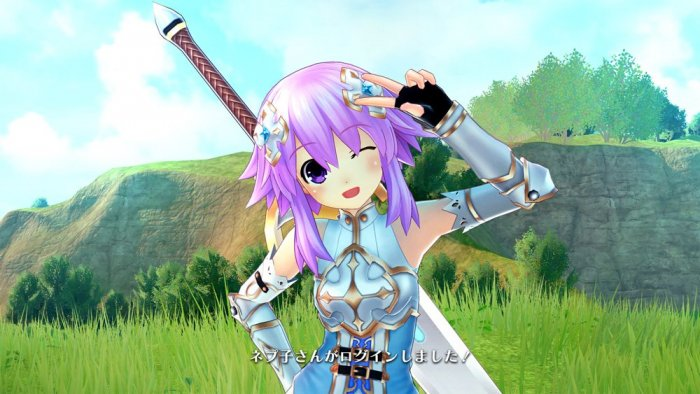

Featured Post
‘Four Goddesses Online: Cyber Dimension Neptune’ Ungkap Alur Game & Karakter Baru
Compile Heart telah merilis trailer debut dari “Four Goddesses Online: Cyber Dimension Neptune”. Diungkapkan juga alur gameplay dan beberapa karakter yang kemungkinan besar kalian kenal.
Alur Game
Kalian akan memainkan berbagai karakter sentral seri Neptunia di sebuah game online dunia ini (tolong jangan terlalu memusingkan logistik dari game didalam game tentang game.) Gameplay dari game ini adalah sebuah Action RPG khas Tamsoft
Selain itu ada juga dua karakter baru yaitu Kiria (Perempuan) dan ✞Kuronekohime✞Karakter Baru
Dipublikasikan juga beberapa visual karakter lainnya, dibawah adalah sosok para CPU Candidate untuk game ini.
‘Four Goddesses Online: Cyber Dimension Neptune’
Kenalkan Cerita & Job
Compile Heart telah membuka situs resmi dari “Four Goddesses Online: Cyber Dimension Neptune” yang mengungkapkan sinopsis cerita dan juga job yang dimiliki oleh masing-masing CPU.
READ MORE >>
Ungkap Isi Royal Edition,
‘Four Goddesses Online: Cyber Dimension Neptune’
Amazon Jepang telah membuka pre-order untuk “Four Goddesses Online: Cyber Dimension Neptune.” Karena itu berbagai screenshot perdana untuk game-nya dirilis yang akhirnya menunjukkan tampak akhir game-nya dengan lebih jelas.
READ MORE >>

Cyber Dimension Neptune’ Rilis di Jepang 9 Februari untuk PS4
Compile Heart akhirnya mengungkapkan detil perdana mengenai “Four Goddesses Online: Cyber Dimension Neptune” melalui Dengeki PlayStation edisi pekan ini. Selain mengungkapkan sinopsis cerita, mereka juga mengumumkan bahwa game action RPG ini akan rilis untuk PlayStation 4.
READ MORE >>
‘Four Goddesses Online: Cyber Dimension Neptune’
Tayangkan Image Video
Compile Heart telah merilis image video untuk “Four Goddesses Online: Cyber Dimension Neptune.” Selain itu, Dengeki Online juga merilis beberapa screenshot dan potongan key visual dari game-nya.
READ MORE >>
About GamU
GamU adalah sebuah portal website yang menyediakan info terbaru mengenai perkembangan seputar dunia game.